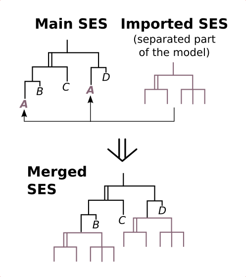

Merging SESs
Motivation
This example shows, how you can merge different SESs to one SES. Moreover, it shows the concept of Attribute Inheritance between the parent and children entities at Specializations and what you have to respect when SESs are merged. The figure illustrates the general approach of merging.
Description
What is merging and why using it?
Merging means, to unify different SES models into one SES. It allows you to separate your model into smaller problems, to test them individually and to merge them after testing to one SES model. Hence, it is useful for large models, where you can easily loose track.
How to do
Start with modelling your separated problems in several SESs. In this example, the SESs "ReferenceValue" and "OpenLoop" represent seperated SESs. Define in it, whatever is needed, including Selection Constraints, SES Functions, SES Variables, Semantic Conditions, etc. After that, model your main SES, here it is called "B08_mainSES". This main SES consists of several leaf nodes, where some represent "connection points" (in this case the nodes "ReferenceValue" and "OpenLoop") for other SESs. It is not mandatory to give them the same name as in the seperated SESs, but helpful. Activate (click) one of these leaf nodes and import the appropriate seperated SES model by using the menu "Merging/import Model...". Do the same for both leaf nodes in the main SES. You will see, that all relevant information from the imported SESs will be inserted automatically (see B08_SESmerged).
Merging and Attribute Inheritance at Specializations
The SES axiom "Inheritance" defines that the father and the selected child of a Specialization unify their names, attributes and Aspects (inheritance of Aspects see example 9) when pruning. This example uses the inheritance of attributes in the SES "OpenLoop" at the Specialization "openLoopSPEC". For all "OpenLoop" models the attribute D should have the value 0. That's why, it is defined only one-time at the parent entity of the Specialization. When pruning, the selected child entity (SISO1 or SISO2) will inherit this attribut and the name of the parent entity (e.g. node name SISO1_OpenLoop with attributes D, mb, A, B, C). Try it by your own!
Notice: You must specify such attributes at the parent node in the seperated SES (e.g. in the SES "OpenLoop") and not at the "connection nodes" in the main SES (these attributes will be overwitten when merging).
Merging nodes that exist several times
You can also merge nodes, which exist a couple of times in your main SES. Just
do the procedure for one of these nodes. Other nodes with the same name will be automatically expanded by the imported SES as well.
Ofcourse, an SES can only be imported, if the SES axioms are not violated by the import operation.
Limitations
Only leaf nodes of type entity are allowed as "connection points" for importing an SES, except entity leaf nodes with a parent node of type MultiAspect.
Additional Information
The following paper (in German) provides some more background to the example. However, notice that some parts in the paper refer to a previous version of the SES tbx, called Tiny SES Tbx. If you have problems to open the link, look in the directory SESTbx/code/examplesDoc/relatedDocuments/ and open the file SchwatinskiPawlettaASIM2013.pdf with your pdf tool.